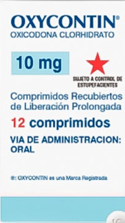
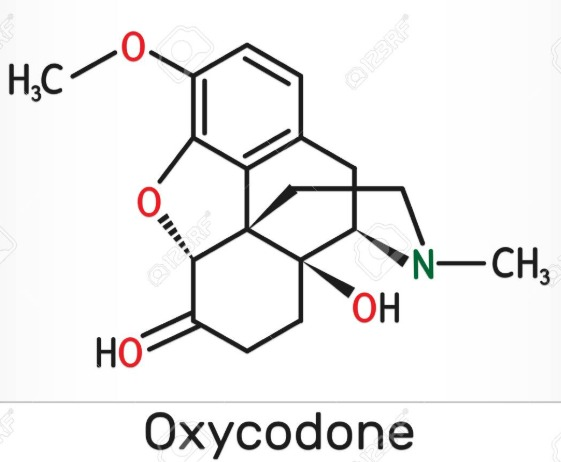

Oxycodona Clorhidrato
Descripción y uso médico:
La oxicodona es un opioide potente utilizado para tratar dolores intensos, comúnmente en pacientes postquirúrgicos o con dolor crónico severo, como el cáncer. Se administra en formulaciones de liberación inmediata o prolongada.
Importancia de la concientización:
Aunque en muchos países su acceso está restringido, es vital informar a la población sobre su peligrosidad. La falta de conocimiento puede llevar a una percepción errónea de seguridad cuando es recetada, fomentando el mal uso o la distribución no autorizada.
Riesgos y consecuencias del mal uso:
Debido a su alta potencia, la oxicodona tiene un elevadísimo riesgo de abuso y adicción. Puede causar euforia, somnolencia, depresión respiratoria, sobredosis y muerte, especialmente cuando se toma en combinación con alcohol u otros fármacos depresores. En países como Estados Unidos, su uso indebido ha provocado crisis de salud pública.
 